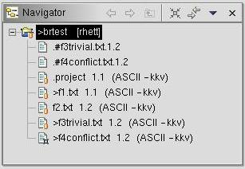

| Eclipse Corner Article |

Summary
This article presents a brief branch and merge scenario designed to quickly illustrate some branch and merge features of Eclipse's CVS integration. I assume the reader already appreciates the value of branching and merging in a source control environment. Little is said to justify it here. Rather, a step-by-step scenario illustrates the common branch and merge operations using Eclipse-based IDEs with CVS as the source control mechanism.By Paul Glezen, IBM
July 3, 2003
The IBM® redbook, WebSphere® Studio Application Developer Programming Guide, contains a section entitled Streams in CVS. It addresses branching and merging using CVS with Eclipse. But many of the menu choices have changed since its publication. The Eclipse online documentation is accurate, but does not provide an end-to-end scenario. The intent of this article is to fill this gap. The version of Eclipse used for this article is 2.1.
The scenario is that of two programmers, Paul and Wing, working on separate branches of the same project. Paul will branch off main and modify some files while Wing continues to work on the main branch, also modifying files. Paul will then merge his branch back to the main branch. In doing so, Paul will address the resulting merge conflicts.
f1.txt. Add the following contents.
This file will only be edited by Paul This line will be changed later. The rest of this file will remain the same. |
f2.txt with the following contents.
This file will only be edited by Wing. This line will be changed later. The rest of this file will remain the same. |
f3trivial.txt with the following
contents.
This file will be edited by Paul and Wing. This line will be changed by Paul only. This line will be left alone. This line will be changed by Wing only. The rest of this file will remain the same. |
f4conflict.txt with the
following contents.
This file will be edited by Paul and Wing. This line will be changed by by both Paul and Wing. The rest of this file will remain the same. |
After adding the above files, your workspace should look something like the screen shot below.
For this simple example, Paul will simply merge his changes directly into the main branch. From the prospective of implementation details, the only difference is the merge target. Since this article is principally concerned with implementation details of the Eclipse branch support using CVS, the simplest branch method is sufficient.
You should be able to see the result of your branch in two ways. By right-clicking the project and selecting Properties and then CVS, you should see the p1test in the tag field. If you have the CVS label decorations enabled, you'll see the branch tag in the navigator view (see below).
|
| To enable CVS label decorations, go to Window --> Preferences and navigate to Workbench --> Label Decorations. Check the CVS box. |
f1.txt. Change line 4 from "This line
will be changed later" to "This line has been changed." Save the
change.
f3trivial.txt. Change line 4 and
5 from "This line will be changed by Paul only" to "This line has
been changed by Paul." Save the change.
f4conflict.txt. Change lines 4 and
5 from "This line will be changed by both Paul and Wing" to "This
line has been changed by Paul." Save the change.
f2.txt. Change "This line will be changed
later" to "This line has been changed." Save the change.
f3trivial.txt in Wing's workspace. Change lines
9 and 10 from "This line will be changed by Wing only" to "This
line has been changed by Wing." Save the change.
f4conflict.txt in Wing's workspace. Change lines
4 and 5 from "This line will be changed by Paul and Wing" to "This
line was changed by Wing." Save the change.
The resource view should look like the one below. Notice the version numbers correspond to what Wing committed. All the version numbers are two digits. The branch name is gone which implies the HEAD branch (or main).
f1.txt was not changed by Wing, so it will come in without
a problem. But f3trivial.txt and f4conflict.txt
were each modified by both Paul and Wing. These will require special
attention during the merge.
f1.txt.
This should leave your Structure Compare view with only two
conflicts.
f3trivial.txt in the Structure Compare view
and select Merge changes into Local Copy. Since
f3trivial.txt was a trivial merge, the merge editor
automatically copies the changes from the p1test branch into
our local copy of the main branch. Inspection of f3trivial.txt
will reveal the changes made by both Paul and Wing.
| Note | We haven't merged into main yet. That doesn't happen until we commit. For now we've just merged into our local copy; hence the name of the menu option. |
You should see an additional file, .#f3trivial.txt, in the
resource view that isn't under source control. It contains a copy
of the pre-merge contents for restoration purposes.
f4conflict.txt to open the Structure
Compare view of the merge tool. The left side of the Text
Compare panel is the local copy of the main branch contents.
The left side is the brtest branch contents. Since this is
not a trivial merge, the color red is used to delineate the scope
of each merge conflict. Blue would be used to denote trivial
merges.
We can't resolve this conflict by simply using one side or the other. For this case, we edit the text in the left side to say "This line has been changed by Paul and Wing." Right-click in this same text window and select Save.
f4conflict.txt,
we no longer need to retain it in the Structure Compare view.
Right-click f4conflict.txt in the Structure Compare
view and select Remove From View. This only removes it from
the view, not from the project.
f4conflict.txt.
After the merge task was complete, we tagged the results to create a release.
Others can then refer to this release using the name "p12merge." A summary
of our actions for a single file is obtained by right-clicking on the file
in the Navigator view and selecting Team --> Show in resource
history. The resource history for f4conflict.txt is show
below.
We can barely see the Root_p1test tag assigned to revision 1.1, the initial version. We see that Paul made changes that were committed to a branch while Wing made changes that were committed to main. Finally, the merge resulted in revision 1.3, which was tagged for posterity with the label "p12merge."
For a software developer, the task of merging ranks among status-reports and schedule-estimation in terms of loathing. It's not difficult to image how the seductively simple "trivial merge" can lead to subtle non-trivial problems in code. Eclipse's CVS integration strives to ease this burden by putting a friendlier face on branch and merge support.
This alternative works great for simple text files. For source code it can result in unexpected compilation behavior if incremental builds are enabled. For this reason, the manual merge step was chosen for steps 17 and 18 above. These steps are re-worked here using the automated approach for readers that prefer this method.

| It is recommended that incremental compilation be disabled when using this method on source code files. This is done from the Windows --> Preferences dialog by selecting Workbench on the left side and unchecking Perform build automatically on resource modification. |
f4conflict.txt and select Merge changes into
Local Copy. Since this is not a trivial merge, the result will contain
merge markers that indictate where the conflict occurred. Markers in the
resource view indicate which files were marged non-trivially.

In the figure above, the non-trivial merge marker appears on f4conflict.txt.
Note the presence of two additional files not under source control.
.#f3trivial.txt and .#f4conflict.txt files contain
copies of the pre-merge contents for restoration purposes.
f4conflict.txt
indicated in the resource view above. Open the f4conflict.txt
in an editor.
Note the manner in which the merge editor calls attention to different
versions of the same line. It is up to us to resolve the conflict and
remove the markers. In this case, we replace the lines between ">>>
f4conflict.txt" and "<<< 1.1.4.1", inclusive,
to contain "This line has been changed by Paul and Wing." Then save the
result.
Notice that saving the result will change the merge conflict marker. The assumption is that the save action resolves the conflict.
IBM and WebSphere are registered trademarks of IBM Corp. in the United States, other countries, or both.